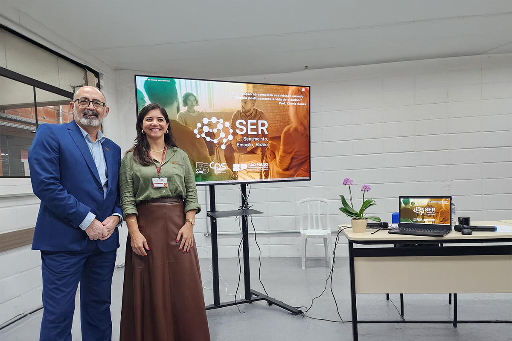
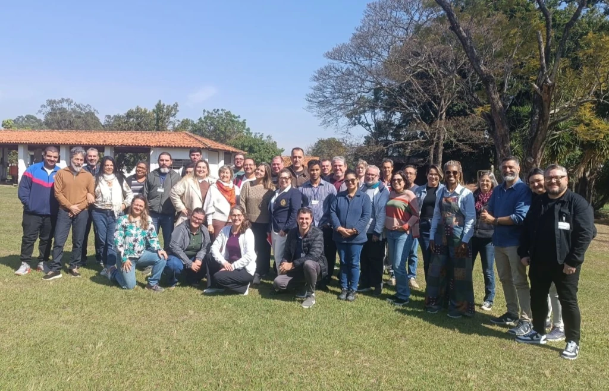

Aproveitando o projeto e a palestra recente é uma boa opurtunidade para falar do SER(Sentimento,Emoção e razão), um novo programa do CPS(Centro Paula Souza) é um programa que visa ajudar os alunos em questões emocionais relacionados a escola ou até mesmo problemas em casa

A ação promove escuta ativa, rodas de conversa e encaminhamento para apoio especializado, quando necessário. O Ser CPS nasceu a partir da iniciativa Momento S.E.R., desenvolvida na Fatec São Roque, pela professora Michele Moreira, que hoje coordena o projeto. “Começamos com atendimentos individuais de 30 minutos no contraturno. Com o apoio da diretoria da unidade, estruturamos o sistema de agendamento e relatórios. A escuta qualificada fez diferença na permanência dos alunos" diz Michele
.jpg)
Inspirada em metodologias de inteligência emocional e comunicação não-violenta, a proposta será aplicada inicialmente em unidades da região de Sorocaba. Participam do projeto piloto Escolas Técnicas Estaduais (Etecs) e Fatecs localizadas nos municípios de Botucatu, Itapetininga, Itu, São Roque, Sorocaba, Tatuí e Votorantim.

Como dito no texto ao lado uma das etec's que vai receber o programa SER é a Etec de itu que instalou o programa Ser com a escuta ativa e agendamento de momentos de fala compreensiva, a professora responsável é a Simoni Micheti coordenadora do TMA, Psicanalista, Master em Hipnose, PNL e consteladora e o programa foi anunciado e implantado com sucesso